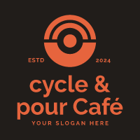

STEPHEN ATSEN
MECHANICAL MAINTENANCE ENGINEER

PROFILE
Driven by a meticulous approach to detail, I am a Mechanical Maintenance
Engineer with a strong foundation in mechanical systems and a demonstrated
capability in equipment maintenance and troubleshooting. I am actively seeking
to expand my expertise in refinery operations, ensuring optimal equipment
performance and safety. My commitment to continuous professional
development fuels my desire to contribute significantly to operational
efficiency within the oil and gas industry
EDUCATION
Caritas University Enugu
Bachelor of Engineering | Mechanical Engineering (2016 - 2021)
Command Secondary School Jos
enior School Certificate (2009 - 2015)
WORK EXPERIENCE Dangote Petroleum Refinery & Petrochemicals (JULY 2024 - PRESENT)
Free Trade Zone, Ibeju Lekki, Lagos
Helped with the upkeep and repairs of key refinery mechanical equipment
like heat exchangers, compressors, and pumps.
Support senior technicians in mechanical fault diagnosis and resolution to
save downtime.
Performed routine inspections and preventive maintenance for equipment
reliability.
followed rigorous safety procedures and rules although working in
dangerous industrial settings.
Actively participated in technical training and hands-on workshops to
enhance practical skills and knowledge.
Maintain accurate records of maintenance activities and report findings to
managers.
Collaborated with teams for refinery operations and improvement.
Bezalel Nigeria Limited (NOV 2023 - JUNE 2024)
Westbrook Mall, Ikate, Lekki, Lagos
Designing HVAC systems for different building types (residential,
commercial, industrial).
Selecting suitable equipment (e.g., chillers, air handlers, ducting).
Creating detailed schematics, blueprints, and technical drawings.
Performing calculations to determine heating and cooling requirements
based on factors like building size, climate, and occupancy.
Utilizing software tools to predict energy use and enhance system
performance.
Sizing ductwork and piping systems to ensure proper airflow and fluid
distribution.
Collaborating with architects, contractors, and other engineers to integrate
HVAC designs into building plans
Perfect Congruence Solutions Ltd (NYSC) (NOV 2023 - JUNE 2024)
17, Ahmed Onibudo St, Victoria Island, Lagos
Conduct technical assessments of vendor proposals and provide
recommendations to procurement teams.
Evaluate potential vendors based on their technical capabilities, product
quality, and compliance with specifications.
Evaluate alternative materials and equipment to optimise cost and
performance.
Assist in quality inspections and testing of procured materials and
equipment.
Work with procurement teams to identify cost-saving opportunities
without compromising technical requirements.
Ensure that specifications are accurate, complete, and aligned with project
needs
TECHNICAL SKILLS
Mechanical maintenance
Troubleshooting failures
Refinery equipment handling
Safety compliance (HSE)
Predictive maintenance
P&ID interpretation
Tool and instrument handling
Proficient in Microsoft office
suite
Proficient in CAD software
SOFT SKILLS
Teamwork and collaboration
Communication skills
Problem-solving
Attention to detail
Adaptability
Time management
Work ethic
TRAINING
Health, Safety, and
Environment (HSE)
Basic Firefighting and First
Aid Training
Machinery Lubrication and
Maintenance Workshop
Equipment Reliability and
Failure Analysis Training
LANGUAGES
REFERENCE
References available upon request
Contact Me
© Stephen Atsen. All rights reserved